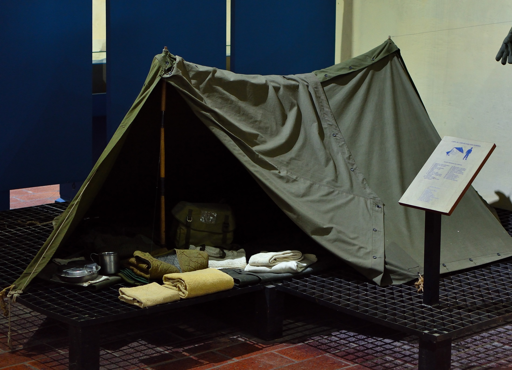
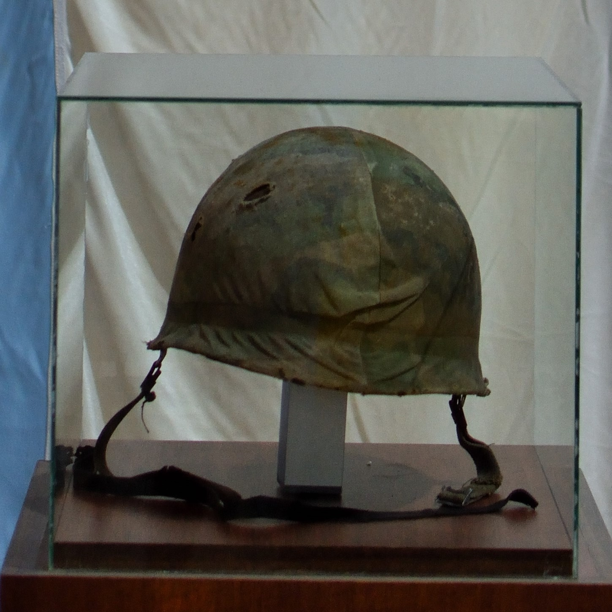

Sala Malvinas – Conflicto del Atlántico Sur
Esta sala rinde homenaje a los hombres y mujeres que participaron en la gesta de 1982 por la
recuperación de las Islas Malvinas, Georgias y Sándwich del Sur. A través de objetos, maquetas y
material documental, se invita al visitante a recorrer distintos aspectos de la vida en campaña, el
despliegue logístico, el armamento utilizado y los escenarios claves del conflicto.
Introducción y símbolos
Se exhibe el escudo diseñado para las Islas Malvinas que se proyectaba utilizar una vez
recuperadas, símbolo de soberanía y esperanza. También se presenta la bandera británica que
perteneció al despacho del gobernador Rex Hunt, así como la bandera argentina que fue la segunda
izada durante el conflicto, testigo del compromiso de nuestras fuerzas en defensa de la Nación.



Vida en campaña y logística
Entre los elementos que reflejan la vida del soldado en el terreno, se encuentra una carpa de doble
paño para dos personas, utilizada en las inclemencias del clima malvinense. Se expone también una
cocina de campaña con capacidad para 250 raciones, operativa tanto a gas como a leña, pieza clave
para el sostenimiento de las tropas. Una maqueta o recreación del Hospital de Puerto Argentino,
instalado en una ex escuela adaptada, recuerda la labor sanitaria desarrollada en condiciones
adversas.
Armamento y vehículos
En esta sección se destacan el vehículo blindado Panhard AML 90, de gran movilidad y
potencia de fuego, y la ametralladora Browning, representativa del armamento pesado de
apoyo. Se incluyen modelos de minas antipersonal y antitanque, que formaban parte del
sistema defensivo durante las operaciones.
Escenarios y operaciones militares
A través de maquetas y representaciones, se recrean puntos estratégicos como la pista del aeropuerto
de Puerto Argentino y el puente Fitz Roy, escenarios decisivos durante el conflicto. Fotografías del
primer prisionero inglés, Jeff Glover, y material sobre la llamada “Sección olvidada” en Monte
Harriet, aportan una visión humana y testimonial de los hechos. La maqueta de la rendición en Puerto
Argentino sintetiza el desenlace de la contienda, invitando a la reflexión sobre el sacrificio y el
valor de quienes participaron.
Esta sala no solo documenta hechos históricos, sino que mantiene viva la memoria de una causa que forma parte de la identidad y la historia del pueblo argentino.
Esta sala no solo documenta hechos históricos, sino que mantiene viva la memoria de una causa que forma parte de la identidad y la historia del pueblo argentino.